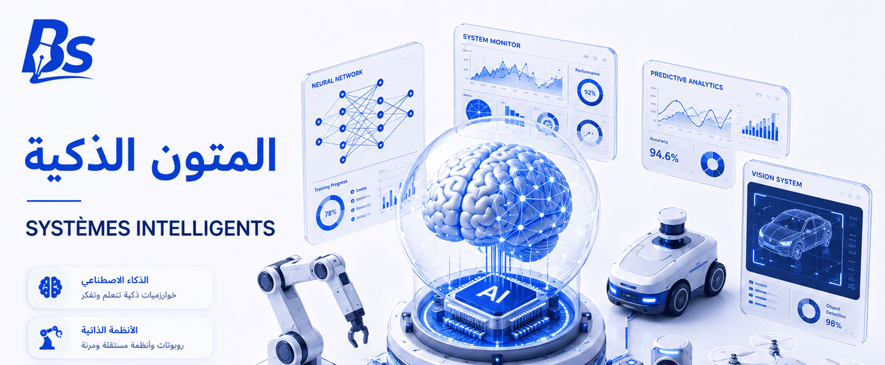

التخصصات الجامعية

المدرسة العليا لعلوم وتكنولوجيات الإعلام الآلي والرقمنة – ESTIN

المدرسة العليا للإعلام الآلي – ESI الجزائر العاصمة

المدرسة العليا للإعلام الآلي – ESI سيدي بلعباس

المدرسة العليا للذكاء الإصطناعي – ENSIA

المدرسة العليا للأمن السيبيراني – ENSCS

المدرسة الوطنية العليا للاتصالات وتكنولوجيا الإعلام – ENSTTIC

المدرسة الوطنية العليا للرياضيات – NHSM

المدرسة الوطنية متعددة التقنيات – POLYTECH

المدرسة متعددة التقنيات للهندسة المعمارية والعمران – EPAU

المدرسة العليا في علوم النانو وتكنولوجيا النانو – ENSSN

المدرسة العليا للأنظمة المستقلة – ENSAS

المدرسة الوطنية التحضيرية لدراسات مهندس – ENPEI رويبة

المدرسة العليا للأشغال العمومية – ENSTP

المدرسة الوطنية العليا للهيدروليك – ENSH البليدة

معهد الإلكترونيك بومرداس – IGEE

المدرسة العليا للهندسة الكهربائية والطاقوية – ENSEE وهران

المدرسة العليا للعلوم التطبيقية – ESSA

المدرسة الوطنية العليا للطاقات المتجددة – HNSRE باتنة

تخصص هندسة الطيران – Aéronautique

المدرسة العليا للتجارة – ENSC

المدرسة العليا للدراسات التجارية – EHEC

المدرسة العليا للتسيير والاقتصاد الرقمي – ESGEN

المدرسة الوطنية العليا للإحصاء والاقتصاد التطبيقي – ENSSEA

المدرسة الوطنية العليا للمناجمنت – ENSM القليعة

المدرسة العليا للمصرفة والبنوك – ESB الجزائر

المدرسة العليا لإدارة الأعمال – ESM تلمسان

المدرسة العليا لعلوم التسيير – ESSG عنابة

المدرسة العليا للمحاسبة والمالية – ESCF قسنطينة

المدرسة العليا للاقتصاد – ESE وهران

المدرسة العليا للسياحة – ENST الجزائر

المدرسة العليا لعلوم التغذية والصناعات الغذائية – ESSAIA

المدرسة العليا للفلاحة – ENSA

المدارس العليا للأساتذة – ENS
.jpeg)
تخصص الطب – MÉDECINE

تخصص طب الأسنان – MÉDECINE DENTAIRE

تخصص الصيدلة – PHARMACIE

تخصصات الشبه طبي – PARAMEDICAL

قابلة الصحة العمومية – Sage Femme

تخصص الصيدلة الصناعية – PHARMACIE INDUSTRIELLE

تخصص الطب البيطري – Vétérinaire

تخصص مزدوج طب + بيولوجيا – Médecine + Biologie

تخصص مزدوج طب + إعلام آلي – Médecine + Informatique

المدرسة العليا للعلوم البيولوجية – ESSB وهران

المدرسة العليا للبيوتكنولوجيا – ENSB

المدرسة الوطنية العليا لعلوم البحر وتهيئة الساحل – ENSSMAL

تخصص الإعلام الآلي – INFORMATIQUE

تخصص الهندسة المعمارية – ARCHITECTURE

تخصص الرياضيات – MATH

تخصص علوم وتكنولوجيا – ST

تخصص علوم المادة – SM

تخصص البيولوجيا – BIOLOGIE

تخصص المحروقات – HYDROCARBURES

تخصص البصريات وميكانيك الدقة – Optique & Mécanique

تخصص هندسة الطرائق – Génie des Procédés

تخصص الهندسة الصناعية – Génie Industriel

تخصص الهندسة البحرية – Marine Engineering

تخصص هندسة النقل – Génie du Transport

تخصص هندسة التعدين – Génie Minier

تخصص الهندسة المدنية – Génie Civil

تخصص الهندسة الميكانيكية – Génie Mécanique

تخصص الحقوق – Droit

تخصص العلوم الاجتماعية – Sciences Sociales

تخصص الترجمة – Traduction

تخصص علوم الإعلام والاتصال – Communication

تخصص اللغات الأجنبية – Langues Étrangères

تخصص العلوم الإسلامية – Sciences Islamiques

تخصص العلوم السياسية – Sciences Politiques

تخصص العلوم الإنسانية – Sciences Humaines
جديد
الذكاء الاصطناعي الطبي – Medical AI
جديد
علم الوراثة الطبية – Medical Genetics
جديد
التشغيل البيني لأنظمة المعلومات – Interoperability
جديد
علم الإدمان – Addictology

المتون الذكية – Smart Corpora & NLP
جديد
الطب الدقيق – Precision Medicine
جديد
صحة الأسنان – Dental Hygienist
جديد
مستشار الوراثة – Genetic Counselor
جديد
الصناعة المقاولاتية – Entrepreneurship
جديد
تكنولوجيا الفضاء – Space Technology
جديد
الهندسة الزراعية الرقمية – Digital Agronomy
جديد
المدن الذكية – Smart Cities
جديد
المعلوماتية الطبية – Medical Informatics
جديد
الفيزياء الكمومية – Quantum Physics
لا توجد نتائج مطابقة لبحثك


.jpeg)


 أصبحت لغة الدراسة رسميًا الإنجليزية بدلاً من الفرنسية.
أصبحت لغة الدراسة رسميًا الإنجليزية بدلاً من الفرنسية.


.jpeg)